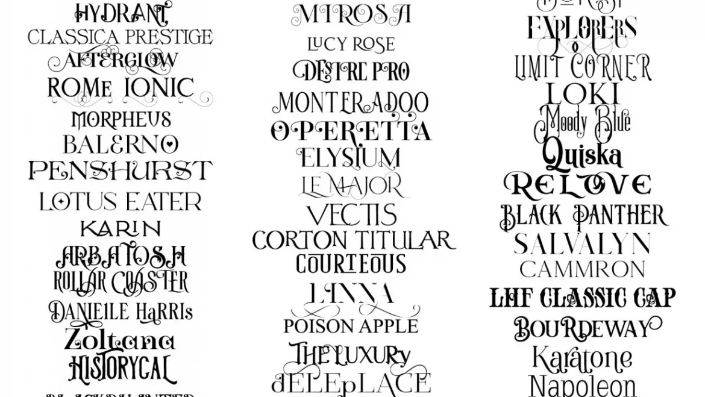
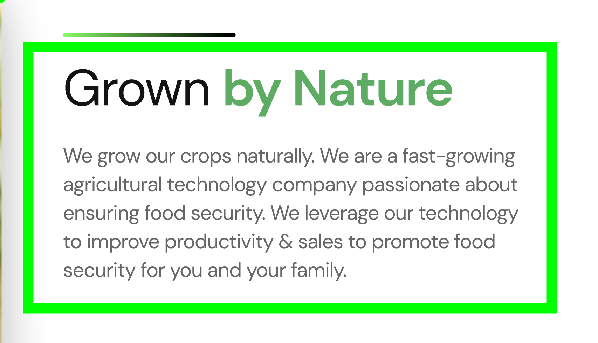

Шрифт
A font is a graphical representation of text that includes style, size, and form of symbols. It is known that a well-chosen font is the key to success in design project! Any designer or person who only has time from time to time works with graphic programs Photoshop, CorelDRAW and others knows how important it is to find exactly the typeface that will most fully convey the essence of the project to the end viewer. Especially often the need for selection original font occurs when creating sites, using writing company names or creating a corporate style.
Шрифти допомагають емоційно забарвити і збагатити текст, поставити явні чи підсвідомі акценти, образи. Навіть невелика фраза виконана гарним шрифтом стає прикрасою на загальному фоні дизайнерської роботи. І навпаки, неправильно підібраний шрифт може зіпсувати враження від будь-якого проекту.Якщо вам потрібно підібрати і завантажити шрифт безкоштовно, то наш сайт стане вам у нагоді. Слід додати, що кожен шрифт був перевірений на наявність всіх літер української абетки. Тільки деякі шрифти, серед доступних на сайті, не мають літери «ґ». Проте, зважаючи на те, що літерою "ґ" в українській мові вживається незначна кількість слів, дана обставина не повинна завдати вам значних клопотів.На сайті зібрана велика кількість шрифтів, які ви можете скачати безкоштовно. Ми постійно поновлюємо базу новими шрифтами. При бажанні ви можете додати свій шрифт до нашої бази. Після перевірки він обов'язково буде доданий до каталогу.
Fonts in modern development Шрифти у сучасній розробці
У сучасній розробці шрифти широко застосовуються у веб-інтерфейсах (кнопки, меню, заголовки, текстові блоки) та мобільних додатках. Особливо важливою є адаптивність — шрифти повинні коректно відображатися на різних екранах і пристроях, зберігаючи читабельність і пропорції. Для роботи зі шрифтами розробники часто використовують онлайн-бібліотеки. Наприклад, Google Fonts — це безкоштовна колекція шрифтів, яку легко підключити до веб-проєкту. Adobe Fonts пропонує професійні шрифти з розширеними можливостями, які часто використовуються в комерційних і дизайнерських проєктах.
Типи шрифтів
-
Serif (із засічками)
- Times New Roman (Класичний для друку)
-
Sans-serif (без засічок)
- Arial(Часто використовується в вебі)
-
Monospace (моноширинні)
- Courier New(Ідеальний для коду)
- Cursive
- Fantasy
Приллади декоративних шрифтів

Властивості шрифтів
-
Розмір (font-size)
-
px, em, rem
- rem — найкращий для адаптивності
-
px, em, rem
Товщина (font-weight)
- 100 - Тонкий (Волосяний) Thin (Hairline)
- 200 - Додатковий світлий (Надсвітлий) Extra Light (Ultra Light)
- 300 - Світлий Light
- 400 - Нормальний Normal
- 500 - Середній Medium
- 600 - Напівжирний Semi Bold (Demi Bold)
- 700 - Жирний Bold
- 800 - Додатковий жирний (Наджирний) Extra Bold (Ultra Bold)
- 900 - Чорний (Густий) Black (Heavy)
- 950 - Exstra Black (Ultra Black)
Контакти
-
Корисні спільноти
- Stack Overflow
- GitHub
-
Навчальні ресурси
- MDN Web Docs
- Нотатки до курсу з Верстки Весна 2026
Розробляємо частину макету Agrolink (скрін)

Grown by Nature
We grow our crops naturally. We are a fast-growing agricultural technology company passionate about ensuring food security. We leverage our technology to improve productivity & sales to promote food security for you and your family.